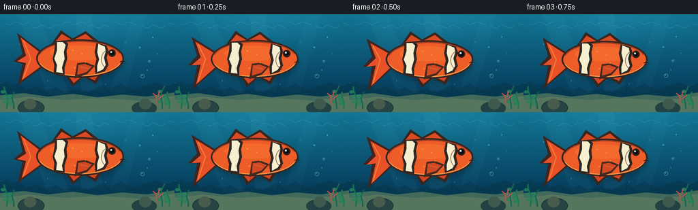
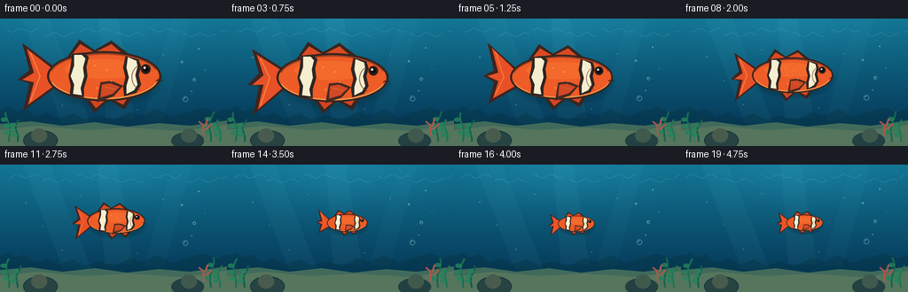

CODING AGENTS AS PIXEL WORLD MODELS
traex/GPT-5.6-Sol · instance_preservation_0051
点击播放 · 原生 RGB 像素
逐轮保存的候选
回放视频、检查图与代码变化。
每份候选均可单独播放。实际图片检查记录在下方工具轨迹中。
候选 01播放与检查图
点击播放 · 原生 RGB 像素


展开代码变化
--- 上一保存版本
+++ 本次保存版本
@@ -0,0 +1,222 @@
+from pathlib import Path
+import math
+import numpy as np
+from PIL import Image, ImageDraw, ImageFilter, ImageChops
+import artifact_io
+
+W, H, N = 256, 144, 20
+SS = 4
+rng = np.random.default_rng(1207)
+
+# Stable fine texture, reused in every frame to avoid flicker.
+noise = rng.normal(0, 1, (H * SS, W * SS)).astype(np.float32)
+
+
+def sc(v):
+ return int(round(v * SS))
+
+
+def q(points):
+ return [(sc(x), sc(y)) for x, y in points]
+
+
+def lerp(a, b, t):
+ return a + (b - a) * t
+
+
+def smoothstep(x):
+ x = max(0.0, min(1.0, x))
+ return x * x * (3 - 2 * x)
+
+
+def background(frame):
+ """A softly textured, stationary reef with very subtle water motion."""
+ hh, ww = H * SS, W * SS
+ yy, xx = np.mgrid[0:hh, 0:ww].astype(np.float32)
+ yn = yy / (hh - 1)
+ # Deep turquoise water, brighter near the surface and center.
+ top = np.array([18, 116, 146], np.float32)
+ bot = np.array([4, 48, 80], np.float32)
+ arr = top[None, None, :] * (1 - yn[..., None]) + bot[None, None, :] * yn[..., None]
+ glow = 15 * np.exp(-(((xx / SS - 128) / 90) ** 2 + ((yy / SS - 9) / 36) ** 2))
+ arr += glow[..., None] * np.array([0.45, 0.85, 1.0], np.float32)
+ arr += noise[..., None] * 1.25
+ arr = np.clip(arr, 0, 255).astype(np.uint8)
+ im = Image.fromarray(arr, 'RGB')
+ d = ImageDraw.Draw(im, 'RGBA')
+
+ # Sun shafts from above, nearly static so the scale change reads cleanly.
+ drift = math.sin(frame * 0.24) * 2.0
+ d.polygon(q([(25 + drift, 0), (55 + drift, 0), (102 + drift, 118), (70 + drift, 118)]), fill=(88, 225, 226, 12))
+ d.polygon(q([(111 - drift, 0), (133 - drift, 0), (151 - drift, 112), (119 - drift, 112)]), fill=(116, 238, 225, 11))
+ d.polygon(q([(194 + drift, 0), (215 + drift, 0), (184 + drift, 115), (161 + drift, 115)]), fill=(79, 214, 220, 9))
+
+ # Slender surface caustics.
+ for j in range(7):
+ x0 = 8 + j * 40 + 2 * math.sin(frame * .25 + j)
+ pts = []
+ for k in range(18):
+ x = x0 + k * 2.1
+ y = 13 + j % 2 * 5 + 2.1 * math.sin(k * .65 + j + frame * .13)
+ pts.append((x, y))
+ d.line(q(pts), fill=(176, 255, 239, 35), width=sc(.65))
+
+ # Distant ghostly reef silhouettes.
+ d.polygon(q([(0, 121), (0, 103), (11, 99), (18, 105), (28, 101), (39, 111),
+ (53, 106), (65, 113), (82, 107), (95, 114), (112, 109), (129, 115),
+ (147, 105), (160, 110), (177, 102), (193, 111), (209, 106), (229, 100),
+ (244, 106), (256, 101), (256, 144)]), fill=(4, 48, 60, 92))
+
+ # Sandy seabed.
+ d.polygon(q([(0, 119), (35, 116), (70, 121), (107, 117), (143, 122), (179, 118),
+ (214, 121), (256, 115), (256, 144), (0, 144)]), fill=(65, 106, 91, 255))
+ d.polygon(q([(0, 126), (42, 121), (95, 126), (145, 123), (205, 127), (256, 120),
+ (256, 144), (0, 144)]), fill=(99, 125, 94, 150))
+
+ # Kelp stems at the outer edges, preserving an uncluttered center.
+ for x, col, phase, height in [(10, (25, 111, 84, 255), .1, 33),
+ (20, (18, 94, 76, 255), 1.7, 25),
+ (238, (22, 101, 77, 255), 2.4, 34),
+ (248, (28, 118, 81, 255), .8, 25)]:
+ pts = []
+ for z in range(10):
+ y = 139 - z * height / 9
+ sway = math.sin(z * .55 + phase + frame * .11) * (z / 9) * 4
+ pts.append((x + sway, y))
+ d.line(q(pts), fill=col, width=sc(2.0))
+ for z in (3, 5, 7):
+ px, py = pts[z]
+ side = -1 if (z + int(x)) % 2 else 1
+ xa, xb = sorted((px, px + side * 7))
+ d.ellipse((sc(xa), sc(py - 1.6), sc(xb), sc(py + 3.2)), fill=(35, 130, 91, 210))
+
+ # Foreground rocks and tiny coral.
+ d.ellipse((sc(26), sc(126), sc(65), sc(149)), fill=(39, 68, 67, 255), outline=(22, 53, 60, 255), width=sc(1))
+ d.ellipse((sc(35), sc(124), sc(53), sc(140)), fill=(72, 91, 77, 255))
+ d.ellipse((sc(193), sc(128), sc(230), sc(148)), fill=(35, 65, 66, 255))
+ d.ellipse((sc(204), sc(124), sc(222), sc(140)), fill=(64, 89, 77, 255))
+ coral = [(230,132),(229,120),(224,116),(229,120),(234,113),(231,122),(239,119),(232,125)]
+ for a,b in zip(coral[::2], coral[1::2]):
+ d.line(q([a,b]), fill=(176, 86, 77, 255), width=sc(2.1))
+
+ # World-space motes and bubbles. Their fixed size makes the fish's shrinking obvious.
+ motes = [(29,34,0.7),(70,88,0.55),(216,72,0.75),(184,31,0.5),(91,27,0.45),
+ (155,93,0.55),(231,48,0.4),(48,63,0.45)]
+ for k, (x,y,r) in enumerate(motes):
+ yy0 = (y - frame * (0.10 + .03*k)) % 102 + 10
+ d.ellipse((sc(x-r),sc(yy0-r),sc(x+r),sc(yy0+r)), fill=(192,242,228,90))
+ for k, (x, y, r) in enumerate([(209,91,3.0),(219,69,1.8),(205,49,1.15),(224,34,0.8)]):
+ yy0 = y - frame * (.22 + .04*k)
+ d.ellipse((sc(x-r),sc(yy0-r),sc(x+r),sc(yy0+r)), outline=(183,244,240,110), width=sc(.7))
+ d.ellipse((sc(x-r*.45),sc(yy0-r*.55),sc(x-r*.05),sc(yy0-r*.15)), fill=(222,255,250,115))
+ return im
+
+
+def draw_fish(im, frame):
+ t = frame / (N - 1)
+ u = smoothstep((t - .08) / .76)
+ size = lerp(1.34, .43, u)
+ cx = lerp(116, 139, smoothstep(t))
+ cy = 65 + 1.7 * math.sin(frame * .48)
+ # Gentle tail beat persists through the transformation, reinforcing identity and life.
+ wag = math.sin(frame * .82) * 5.2
+
+ def tr(pt):
+ x, y = pt
+ return (cx + x * size, cy + y * size)
+
+ def T(points):
+ return q([tr(p) for p in points])
+
+ d = ImageDraw.Draw(im, 'RGBA')
+ line = max(sc(.55), int(round(1.45 * size * SS)))
+ dark = (55, 38, 32, 255)
+
+ # Soft contact-like underwater shadow behind the fish.
+ shadow = Image.new('RGBA', im.size, (0,0,0,0))
+ sd = ImageDraw.Draw(shadow, 'RGBA')
+ sd.ellipse((sc(cx-46*size), sc(cy-19*size+3), sc(cx+49*size), sc(cy+23*size+3)), fill=(0,18,30,55))
+ shadow = shadow.filter(ImageFilter.GaussianBlur(max(1, sc(2.2*size))))
+ im.paste(shadow, (0,0), shadow)
+ d = ImageDraw.Draw(im, 'RGBA')
+
+ # Tail, with a flexible fork and a dark rim.
+ tail = [(-40,-7), (-68,-28+wag), (-62,-5+wag*.35), (-72,3+wag),
+ (-62,6+wag*.35), (-67,29+wag), (-39,9)]
+ d.polygon(T(tail), fill=(63,36,31,255))
+ inner_tail = [(-41,-5), (-64,-23+wag), (-58,-3+wag*.3), (-68,3+wag),
+ (-58,5+wag*.3), (-63,24+wag), (-40,7)]
+ d.polygon(T(inner_tail), fill=(232,81,39,255))
+ d.line(T([(-61,-20+wag),(-53,0),(-61,21+wag)]), fill=(255,150,65,180), width=max(1,int(line*.7)))
+
+ # Dorsal and lower fins behind the body.
+ dorsal = [(-30,-16),(-20,-31),(-7,-22),(7,-30),(24,-17)]
+ d.polygon(T(dorsal), fill=dark)
+ d.polygon(T([(-27,-17),(-19,-27),(-7,-20),(7,-27),(20,-16)]), fill=(218,74,35,255))
+ lower = [(-17,16),(-7,31),(5,20),(18,28),(28,13)]
+ d.polygon(T(lower), fill=dark)
+ d.polygon(T([(-14,16),(-6,27),(5,18),(17,24),(24,13)]), fill=(211,68,35,255))
+
+ # Main orange body with a crisp chocolate outline.
+ bbox = (sc(cx-47*size), sc(cy-21*size), sc(cx+49*size), sc(cy+21*size))
+ d.ellipse(bbox, fill=(55,37,31,255))
+ inner = (sc(cx-45.2*size), sc(cy-19.4*size), sc(cx+47.2*size), sc(cy+19.4*size))
+ d.ellipse(inner, fill=(238,92,39,255))
+ # Warm highlight and shaded belly, clipped by conservative placement.
+ d.ellipse((sc(cx-32*size),sc(cy-14.5*size),sc(cx+31*size),sc(cy+2*size)), fill=(255,132,55,85))
+ d.arc(inner, start=18, end=163, fill=(255,183,90,175), width=max(1,int(line*.85)))
+ d.arc(inner, start=194, end=342, fill=(108,44,34,150), width=max(1,int(line*.9)))
+
+ # Two unmistakable white clownfish bands, black-edged and shape-preserving.
+ bands_outer = [
+ [(-26,-19),(-16,-20),(-12,-16),(-14,-8),(-13,0),(-16,10),(-16,18),(-28,16),(-27,8),(-29,0),(-27,-9)],
+ [(19,-17),(30,-14),(32,-8),(30,-1),(32,7),(28,14),(18,17),(17,9),(19,1),(17,-7)]
+ ]
+ bands_inner = [
+ [(-24,-18),(-18,-18),(-15,-15),(-17,-7),(-16,0),(-19,10),(-18,16),(-25,15),(-24,7),(-27,0),(-24,-9)],
+ [(21,-16),(28,-13),(29,-8),(27,-1),(29,7),(26,12),(20,15),(20,8),(22,1),(20,-7)]
+ ]
+ for po, pi in zip(bands_outer, bands_inner):
+ d.polygon(T(po), fill=(48,37,33,255))
+ d.polygon(T(pi), fill=(245,239,207,255))
+ d.line(T(pi + [pi[0]]), fill=(255,255,235,120), width=max(1,int(line*.25)))
+
+ # A small side fin gives depth; its shape remains identical at every scale.
+ pfin = [(-2,5),(-5,22),(9,17),(17,8),(7,4)]
+ d.polygon(T(pfin), fill=(63,39,32,245))
+ d.polygon(T([(-1,7),(-2,18),(8,15),(14,9),(6,6)]), fill=(221,76,37,235))
+ d.line(T([(1,9),(10,11)]), fill=(255,146,70,150), width=max(1,int(line*.42)))
+
+ # Face: bright eye, specular glint, gill and tiny mouth.
+ er = max(.9, 3.4 * size)
+ ex, ey = tr((36,-6))
+ d.ellipse((sc(ex-er-0.7*size),sc(ey-er-0.7*size),sc(ex+er+0.7*size),sc(ey+er+0.7*size)), fill=(45,30,27,255))
+ d.ellipse((sc(ex-er*.67),sc(ey-er*.67),sc(ex+er*.67),sc(ey+er*.67)), fill=(7,12,13,255))
+ gl = max(.28, er*.28)
+ d.ellipse((sc(ex-er*.27-gl),sc(ey-er*.30-gl),sc(ex-er*.27+gl),sc(ey-er*.30+gl)), fill=(255,255,237,255))
+ d.arc((sc(cx+24*size),sc(cy-10*size),sc(cx+43*size),sc(cy+12*size)), 105, 247, fill=(100,45,34,180), width=max(1,int(line*.5)))
+ mx, my = tr((47,4))
+ d.arc((sc(mx-2.8*size),sc(my-1.4*size),sc(mx+3.6*size),sc(my+2.6*size)), 205, 338, fill=(58,31,29,255), width=max(1,int(line*.65)))
+
+ # A few persistent scale glints between the bands.
+ for x,y in [(-7,-9),(3,-5),(7,4),(-5,10)]:
+ a,b = tr((x,y))
+ r=max(.25,.7*size)
+ d.ellipse((sc(a-r),sc(b-r),sc(a+r),sc(b+r)), fill=(255,176,83,145))
+
+
+def make_frames():
+ frames=[]
+ for i in range(N):
+ im = background(i)
+ draw_fish(im, i)
+ im = im.resize((W,H), Image.Resampling.LANCZOS).convert('RGB')
+ frames.append(np.asarray(im, dtype=np.uint8))
+ return np.stack(frames)
+
+
+if __name__ == '__main__':
+ case_dir = Path(__file__).resolve().parent
+ frames = make_frames()
+ artifact_io.save(frames, case_dir)
+ print(f'Saved {len(frames)} RGB frames at {W}x{H}.')
可观测工具轨迹
实际执行的命令与返回图片。
命令 1exit 0
/bin/bash -lc "cat prompt.txt && printf '\\n--- RULES ---\\n' && cat GENERATION_RULES.md && printf '\\n--- SPEC ---\\n' && cat task_spec.json"
命令 2exit 0
/bin/bash -lc "find . -maxdepth 2 -type f -printf '%p\\n' | sort"
命令 3exit 0
/bin/bash -lc "sed -n '1,240p' artifact_io.py"
命令 4exit 0
/bin/bash -lc "python - <<'PY'
import PIL, numpy
print('PIL',PIL.__version__,'numpy',numpy.__version__)
PY"命令 5exit 1
/bin/bash -lc "cat > generate.py <<'PY'
from pathlib import Path
import math
import numpy as np
from PIL import Image, ImageDraw, ImageFilter, ImageChops
import artifact_io
W, H, N = 256, 144, 20
SS = 4
rng = np.random.default_rng(1207)
# Stable fine texture, reused in every frame to avoid flicker.
noise = rng.normal(0, 1, (H * SS, W * SS)).astype(np.float32)
def sc(v):
return int(round(v * SS))
def q(points):
return [(sc(x), sc(y)) for x, y in points]
def lerp(a, b, t):
return a + (b - a) * t
def smoothstep(x):
x = max(0.0, min(1.0, x))
return x * x * (3 - 2 * x)
def background(frame):
\"\"\"A softly textured, stationary reef with very subtle water motion.\"\"\"
hh, ww = H * SS, W * SS
yy, xx = np.mgrid[0:hh, 0:ww].astype(np.float32)
yn = yy / (hh - 1)
# Deep turquoise water, brighter near the surface and center.
top = np.array([18, 116, 146], np.float32)
bot = np.array([4, 48, 80], np.float32)
arr = top[None, None, :] * (1 - yn[..., None]) + bot[None, None, :] * yn[..., None]
glow = 15 * np.exp(-(((xx / SS - 128) / 90) ** 2 + ((yy / SS - 9) / 36) ** 2))
arr += glow[..., None] * np.array([0.45, 0.85, 1.0], np.float32)
arr += noise[..., None] * 1.25
arr = np.clip(arr, 0, 255).astype(np.uint8)
im = Image.fromarray(arr, 'RGB')
d = ImageDraw.Draw(im, 'RGBA')
# Sun shafts from above, nearly static so the scale change reads cleanly.
drift = math.sin(frame * 0.24) * 2.0
d.polygon(q([(25 + drift, 0), (55 + drift, 0), (102 + drift, 118), (70 + drift, 118)]), fill=(88, 225, 226, 12))
d.polygon(q([(111 - drift, 0), (133 - drift, 0), (151 - drift, 112), (119 - drift, 112)]), fill=(116, 238, 225, 11))
d.polygon(q([(194 + drift, 0), (215 + drift, 0), (184 + drift, 115), (161 + drift, 115)]), fill=(79, 214, 220, 9))
# Slender surface caustics.
for j in range(7):
x0 = 8 + j * 40 + 2 * math.sin(frame * .25 + j)
pts = []
for k in range(18):
x = x0 + k * 2.1
y = 13 + j % 2 * 5 + 2.1 * math.sin(k * .65 + j + frame * .13)
pts.append((x, y))
d.line(q(pts), fill=(176, 255, 239, 35), width=sc(.65))
# Distant ghostly reef silhouettes.
d.polygon(q([(0, 121), (0, 103), (11, 99), (18, 105), (28, 101), (39, 111),
(53, 106), (65, 113), (82, 107), (95, 114), (112, 109), (129, 115),
(147, 105), (160, 110), (177, 102), (193, 111), (209, 106), (229, 100),
(244, 106), (256, 101), (256, 144)]), fill=(4, 48, 60, 92))
# Sandy seabed.
d.polygon(q([(0, 119), (35, 116), (70, 121), (107, 117), (143, 122), (179, 118),
(214, 121), (256, 115), (256, 144), (0, 144)]), fill=(65, 106, 91, 255))
d.polygon(q([(0, 126), (42, 121), (95, 126), (145, 123), (205, 127), (256, 120),
(256, 144), (0, 144)]), fill=(99, 125, 94, 150))
# Kelp stems at the outer edges, preserving an uncluttered center.
for x, col, phase, height in [(10, (25, 111, 84, 255), .1, 33),
(20, (18, 94, 76, 255), 1.7, 25),
(238, (22, 101, 77, 255), 2.4, 34),
(248, (28, 118, 81, 255), .8, 25)]:
pts = []
for z in range(10):
y = 139 - z * height / 9
sway = math.sin(z * .55 + phase + frame * .11) * (z / 9) * 4
pts.append((x + sway, y))
d.line(q(pts), fill=col, width=sc(2.0))
for z in (3, 5, 7):
px, py = pts[z]
side = -1 if (z + int(x)) % 2 else 1
d.ellipse((sc(px), sc(py - 1.6), sc(px + side * 7), sc(py + 3.2)), fill=(35, 130, 91, 210))
# Foreground rocks and tiny coral.
d.ellipse((sc(26), sc(126), sc(65), sc(149)), fill=(39, 68, 67, 255), outline=(22, 53, 60, 255), width=sc(1))
d.ellipse((sc(35), sc(124), sc(53), sc(140)), fill=(72, 91, 77, 255))
d.ellipse((sc(193), sc(128), sc(230), sc(148)), fill=(35, 65, 66, 255))
d.ellipse((sc(204), sc(124), sc(222), sc(140)), fill=(64, 89, 77, 255))
coral = [(230,132),(229,120),(224,116),(229,120),(234,113),(231,122),(239,119),(232,125)]
for a,b in zip(coral[::2], coral[1::2]):
d.line(q([a,b]), fill=(176, 86, 77, 255), width=sc(2.1))
# World-space motes and bubbles. Their fixed size makes the fish's shrinking obvious.
motes = [(29,34,0.7),(70,88,0.55),(216,72,0.75),(184,31,0.5),(91,27,0.45),
(155,93,0.55),(231,48,0.4),(48,63,0.45)]
for k, (x,y,r) in enumerate(motes):
yy0 = (y - frame * (0.10 + .03*k)) % 102 + 10
d.ellipse((sc(x-r),sc(yy0-r),sc(x+r),sc(yy0+r)), fill=(192,242,228,90))
for k, (x, y, r) in enumerate([(209,91,3.0),(219,69,1.8),(205,49,1.15),(224,34,0.8)]):
yy0 = y - frame * (.22 + .04*k)
d.ellipse((sc(x-r),sc(yy0-r),sc(x+r),sc(yy0+r)), outline=(183,244,240,110), width=sc(.7))
d.ellipse((sc(x-r*.45),sc(yy0-r*.55),sc(x-r*.05),sc(yy0-r*.15)), fill=(222,255,250,115))
return im
def draw_fish(im, frame):
t = frame / (N - 1)
u = smoothstep((t - .08) / .76)
size = lerp(1.34, .43, u)
cx = lerp(116, 139, smoothstep(t))
cy = 65 + 1.7 * math.sin(frame * .48)
# Gentle tail beat persists through the transformation, reinforcing identity and life.
wag = math.sin(frame * .82) * 5.2
def tr(pt):
x, y = pt
return (cx + x * size, cy + y * size)
def T(points):
return q([tr(p) for p in points])
d = ImageDraw.Draw(im, 'RGBA')
line = max(sc(.55), int(round(1.45 * size * SS)))
dark = (55, 38, 32, 255)
# Soft contact-like underwater shadow behind the fish.
shadow = Image.new('RGBA', im.size, (0,0,0,0))
sd = ImageDraw.Draw(shadow, 'RGBA')
sd.ellipse((sc(cx-46*size), sc(cy-19*size+3), sc(cx+49*size), sc(cy+23*size+3)), fill=(0,18,30,55))
shadow = shadow.filter(ImageFilter.GaussianBlur(max(1, sc(2.2*size))))
im.paste(shadow, (0,0), shadow)
d = ImageDraw.Draw(im, 'RGBA')
# Tail, with a flexible fork and a dark rim.
tail = [(-40,-7), (-68,-28+wag), (-62,-5+wag*.35), (-72,3+wag),
(-62,6+wag*.35), (-67,29+wag), (-39,9)]
d.polygon(T(tail), fill=(63,36,31,255))
inner_tail = [(-41,-5), (-64,-23+wag), (-58,-3+wag*.3), (-68,3+wag),
(-58,5+wag*.3), (-63,24+wag), (-40,7)]
d.polygon(T(inner_tail), fill=(232,81,39,255))
d.line(T([(-61,-20+wag),(-53,0),(-61,21+wag)]), fill=(255,150,65,180), width=max(1,int(line*.7)))
# Dorsal and lower fins behind the body.
dorsal = [(-30,-16),(-20,-31),(-7,-22),(7,-30),(24,-17)]
d.polygon(T(dorsal), fill=dark)
d.polygon(T([(-27,-17),(-19,-27),(-7,-20),(7,-27),(20,-16)]), fill=(218,74,35,255))
lower = [(-17,16),(-7,31),(5,20),(18,28),(28,13)]
d.polygon(T(lower), fill=dark)
d.polygon(T([(-14,16),(-6,27),(5,18),(17,24),(24,13)]), fill=(211,68,35,255))
# Main orange body with a crisp chocolate outline.
bbox = (sc(cx-47*size), sc(cy-21*size), sc(cx+49*size), sc(cy+21*size))
d.ellipse(bbox, fill=(55,37,31,255))
inner = (sc(cx-45.2*size), sc(cy-19.4*size), sc(cx+47.2*size), sc(cy+19.4*size))
d.ellipse(inner, fill=(238,92,39,255))
# Warm highlight and shaded belly, clipped by conservative placement.
d.ellipse((sc(cx-32*size),sc(cy-14.5*size),sc(cx+31*size),sc(cy+2*size)), fill=(255,132,55,85))
d.arc(inner, start=18, end=163, fill=(255,183,90,175), width=max(1,int(line*.85)))
d.arc(inner, start=194, end=342, fill=(108,44,34,150), width=max(1,int(line*.9)))
# Two unmistakable white clownfish bands, black-edged and shape-preserving.
bands_outer = [
[(-26,-19),(-16,-20),(-12,-16),(-14,-8),(-13,0),(-16,10),(-16,18),(-28,16),(-27,8),(-29,0),(-27,-9)],
[(19,-17),(30,-14),(32,-8),(30,-1),(32,7),(28,14),(18,17),(17,9),(19,1),(17,-7)]
]
bands_inner = [
[(-24,-18),(-18,-18),(-15,-15),(-17,-7),(-16,0),(-19,10),(-18,16),(-25,15),(-24,7),(-27,0),(-24,-9)],
[(21,-16),(28,-13),(29,-8),(27,-1),(29,7),(26,12),(20,15),(20,8),(22,1),(20,-7)]
]
for po, pi in zip(bands_outer, bands_inner):
d.polygon(T(po), fill=(48,37,33,255))
d.polygon(T(pi), fill=(245,239,207,255))
d.line(T(pi + [pi[0]]), fill=(255,255,235,120), width=max(1,int(line*.25)))
# A small side fin gives depth; its shape remains identical at every scale.
pfin = [(-2,5),(-5,22),(9,17),(17,8),(7,4)]
d.polygon(T(pfin), fill=(63,39,32,245))
d.polygon(T([(-1,7),(-2,18),(8,15),(14,9),(6,6)]), fill=(221,76,37,235))
d.line(T([(1,9),(10,11)]), fill=(255,146,70,150), width=max(1,int(line*.42)))
# Face: bright eye, specular glint, gill and tiny mouth.
er = max(.9, 3.4 * size)
ex, ey = tr((36,-6))
d.ellipse((sc(ex-er-0.7*size),sc(ey-er-0.7*size),sc(ex+er+0.7*size),sc(ey+er+0.7*size)), fill=(45,30,27,255))
d.ellipse((sc(ex-er*.67),sc(ey-er*.67),sc(ex+er*.67),sc(ey+er*.67)), fill=(7,12,13,255))
gl = max(.28, er*.28)
d.ellipse((sc(ex-er*.27-gl),sc(ey-er*.30-gl),sc(ex-er*.27+gl),sc(ey-er*.30+gl)), fill=(255,255,237,255))
d.arc((sc(cx+24*size),sc(cy-10*size),sc(cx+43*size),sc(cy+12*size)), 105, 247, fill=(100,45,34,180), width=max(1,int(line*.5)))
mx, my = tr((47,4))
d.arc((sc(mx-2.8*size),sc(my-1.4*size),sc(mx+3.6*size),sc(my+2.6*size)), 205, 338, fill=(58,31,29,255), width=max(1,int(line*.65)))
# A few persistent scale glints between the bands.
for x,y in [(-7,-9),(3,-5),(7,4),(-5,10)]:
a,b = tr((x,y))
r=max(.25,.7*size)
d.ellipse((sc(a-r),sc(b-r),sc(a+r),sc(b+r)), fill=(255,176,83,145))
def make_frames():
frames=[]
for i in range(N):
im = background(i)
draw_fish(im, i)
im = im.resize((W,H), Image.Resampling.LANCZOS).convert('RGB')
frames.append(np.asarray(im, dtype=np.uint8))
return np.stack(frames)
if __name__ == '__main__':
case_dir = Path(__file__).resolve().parent
frames = make_frames()
artifact_io.save(frames, case_dir)
print(f'Saved {len(frames)} RGB frames at {W}x{H}.')
PY
python generate.py"命令 6exit 0
/bin/bash -lc 'python generate.py'
命令 7exit 0
/bin/bash -lc "python - <<'PY'
import numpy as np
from PIL import Image
from pathlib import Path
p=Path('.')
z=np.load('pixels.npz')['pixels']
print('pixels',z.shape,z.dtype,'files',len(list(Path('frames').glob('*.png'))))
for i in [0,3,7,11,15,19]:
im=np.asarray(Image.open(f'frames/{i:02d}.png'))
print(i,im.shape,im.dtype,im.min(),im.max(),float(im.mean()))
PY
ls -lh pixels.npz index.html inspection.png frames/00.png frames/19.png"视觉工具实际返回图片 1

保存候选 1 份；完成命令 7 次；可验证图片返回 1 张。原始 API 响应与完整日志保留在本地。